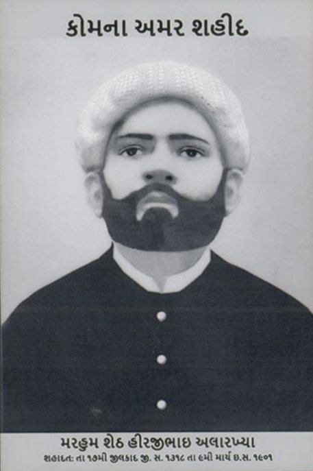
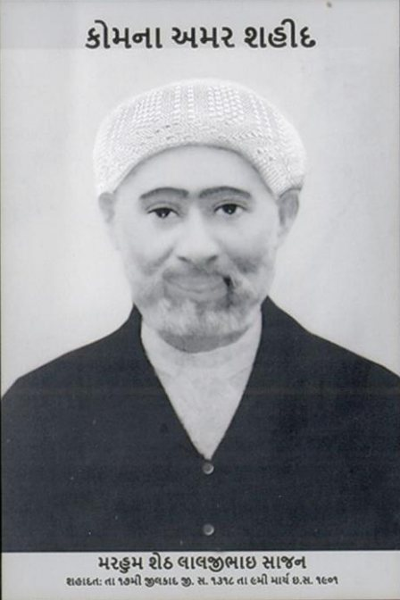
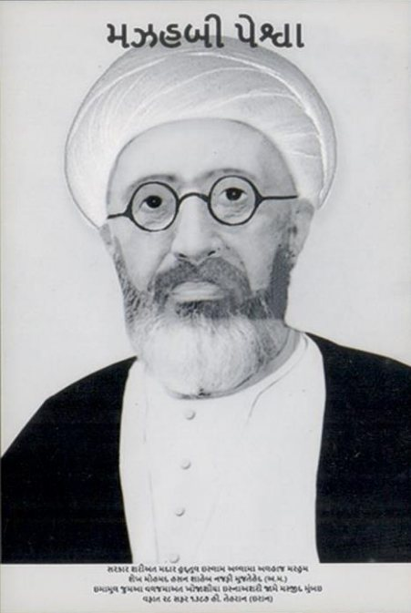
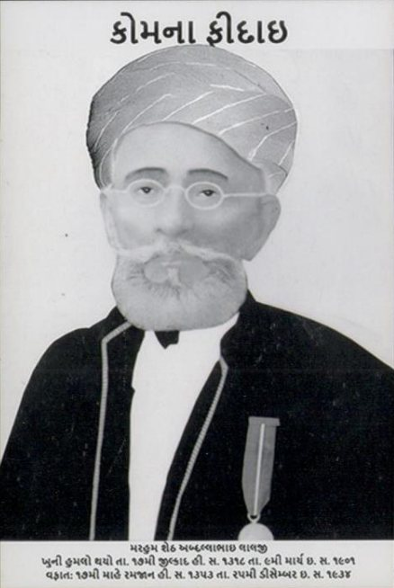
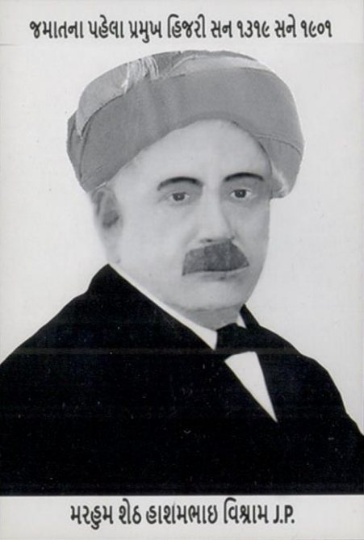
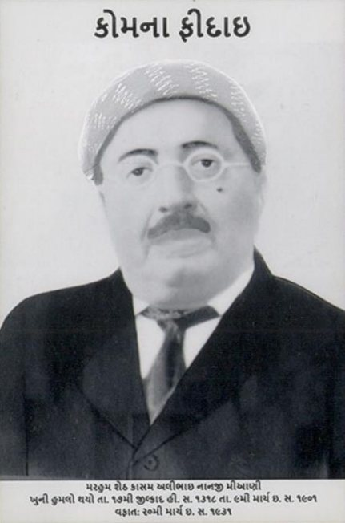

The journey of faith.
How the Khoja Shia Ithna Asheri community took shape, and why Mumbai is called its birthplace.
Mumbai, then Bombay, the birthplace.
The Khojas have a long history and a rich heritage dating back to the 9th and 11th centuries, and the role of the KSI Jamaat Mumbai has been phenomenal in the formation of the Khoja Shia Ithna Asheris worldwide. It would not be wrong to claim that Mumbai (then Bombay) is the very birthplace of the Khoja Shia Ithna Asheris.
The word ‘Khoja’, as many scholars believe, comes from the phonetic corruption of the word ‘Khwaja’, meaning honourable, a title given by the Pirs to the new converts. The history of the Khojas, as termed by Hasnain Walji, an ex-president of the World Federation of KSIMC, London, is a ‘Journey of Faith’.
Back in the 9th and 11th centuries, various Dais of the Nizari branch of Islam and Sufi teachers came from Iran (then Persia) to India, prominent among them Pir Sadruddin. For many centuries Satpanth was the dominant ideology, while moving towards the Nizari faith of Islam. The Satpanthis, who had over centuries turned to the Nizari faith, were introduced to many Islamic concepts after the arrival of the Aga Khan I.
The excommunicated Khojas needed places of worship, as they were not allowed in the Ismaili Jamatkhanas, and so began a series of new mosques and Imambargahs instead of Jamaatkhanas. Many Khojas moved out of Bombay to other areas, including East Africa and Karachi.
The KSI Jamaat, Mumbai, as history suggests, has always taken a lead for the betterment of the community and Insha’allah, with the blessings of the Imam of the Time (may Allah (a.w.j.) hasten his reappearance), will continue to lead and serve the community.
A journey of faith, year by year.
- c. 1276 AD
Pir Sadruddin arrives in Sindh and becomes popular amongst the Thakkars of the Lohana sub-caste. The Thakkars are introduced to the personality of Imam Ali (a.s.) and convert to Satpanth, a combination of Hindu customs and Sufi ideas.
- 1840s
Hasan Ali Shah, known as the Aga Khan I, arrives in India. Between the 1840s and 1860s some Ismailis begin to follow Sunni practices, which the Aga Khan I did not approve, and twenty years of turmoil follow.
- 1862
The Bar Bhaiyya Sunni Jamaat is formed in Bombay. Mulla Qadar Hussain, a religious scholar from Madras, comes to Bombay and preaches the Ithna Asheri faith in a madressa. Many Ismailis attend. In 1870 he goes to Karbala.
- 1872
Dewji Jamal, a prominent Khoja businessman, meets Ayatullah Zainul Aabedeen Mazandarani in Karbala and asks him to send Mulla Qadar Hussain Karbalayi to Bombay.
- 1872 to 1873
Mulla Qadar Hussain Karbalayi settles in Bombay and preaches at a madressa near Palagali (now Hazrat Abbas (a.s.) Street), which still exists. Namaz e Jamaat and Majaalis begin, and many Ismaili elders join.
- 1876 to 1878
Pressure, bribes, threats and excommunications follow. Lalan Alidina is martyred in Karachi (1876); Khalfan Ratansi is excommunicated and his daughter denied burial (1876); Dewji Jamal and Alarakhia Valli are excommunicated and move to Zanzibar (1877); Killu Khatau is hanged in Bombay (1878).
- 1881 and 1892
Under Dewji Jamal, the first Khoja Shia Ithna Asheri mosque and Imambargah is built in Zanzibar, the Kuwwat mosque (1881). A mosque is built in Karachi (1892); litigation prevents one in Bombay.
- 1901
The Khoja Shia Ithna Asheri Jamaat is announced in the local newspapers of Bombay and the Khoja Masjid is established at Palagali. On 9 March 1901 (17 Zilqad 1318 AH) Hirjibhai Alarakhia and Laljibhai Sajan are martyred near the Masjid protecting it; Abdulla Lalji and Kassam Alibhai Nanji are among those injured.
- 1902
Mulla Qadar Hussain Karbalayi, having completed his autobiography in 1901, returns to Karbala, where he passes away and is buried. Shaikh Abul Qasim Najafi becomes the first resident Aalim of the Jamaat.
- 1905 to 1921
Haji Nazarali, son of Haji Dewji Jamal, buys land in Kurla for an Imambargah. The Haji Nazarali Imambargah is inaugurated on 11 August 1921. Haji Nazarali passes away in Mumbai in 1930 and is buried in Karbala.
- 1945 to 1947
Muhammad Ali Jinnah was once a member of KSI Jamaat Mumbai. The Africa Federation forms in 1945 to 46. With Partition in 1947 many KSIs move to Karachi, while many stay in Mumbai.
- 1976 to 2005
The World Federation of Khoja Shia Ithna Asheri Muslim Communities is formed in October 1976, with the inaugural address by Marhum Mulla Asghar M. M. Jaffer. NASIMCO follows in 1980, the Gujarat Federation in 1984 and the Council of European Jamaats in 2005.
- 2014
In January, KSI Jamaat Mumbai hosts the EXCO of the World Federation of KSIMC, a first for the Mumbai Jamaat.
- 2017
KSI Jamaat Mumbai leads the creation of a regional federation of KSI Jamaats in India, and the India Federation, Council of all KSI Jamaat, is officially registered.
- 2023
On 1 November, the Khoja Heritage Wall opens at Khoja Aarambaug, Mazgaon.
Our martyrs, Aalims and first leaders.
Request for a Sura e Fateha for the deceased who contributed towards building this community.








1st in India, 6th in the world.
KSI Jamat Mumbai installed a Khoja Heritage Wall inside the Khoja Aarambaug, Mazgaon premises on 1 November 2023, the 1st Jamat in India and the 6th in the entire globe to take this informative and proud initiative.
Heartfelt gratitude to Hon. MLA Amin Patel, Hon. President Azad Haidaraly (All Paris Jamaat), Hon. President Azem Jetha (Paris South Jamaat), Dr Anwar Dhanji (Ex President COEJ), community Maulanas and elders Ali Raza bh Bandealy, Yasin bh Badami, Nisar bh Virani, Gulam Mohammed bh Lakhani, Ali Akbar bh Ratansi, Alamdar bh Sharif, Mohammed Ali bh Vakil and all our elders and brothers who attended and did the honours.
Thank you: Office Bearers, Managing Committee, Consulting Committee and Arambaug Committee members.
Past office bearers.
Past Presidents
- Mr. Hashambhai Vishram JP1901–1903
- Mr. Abdullahbhai Lalji1904
- Mr. Hashambhai Vishram JP1905–1911
- Mr. Abdullahbhai Lalji1912–1932
- Haji Gulamhusainbhai A Muraj1933
- Mr. Huseinbhai Abdullah Laalji1934–1945
- Haji Hasanalibhai P Ebrahim1945–1947
- Mr. Ramzanalibhai P Ebrahim1947–1957
- Haji Ismailbhai A K Panju1957–1962
- Mr. Hussainbhai Abdullah Lalji1962–1963
- Haji Sultanbhai A S Moloobhoy1964–1980
- Haji Roshanali D Naseer1981–1984
- Haji Hasanali M Ladiwala1984–1989
- Haji U.G. Merchant (Bhanabhai)1989
- Haji Hasanali R Mookhi1990–1991
- Haji Sultanalibhai G. Delhiwala1991–1993
- Haji U.G. Merchant (Bhanabhai)1994–1996
- Haji Mohibali R.D. Naseer1996–2000
- Haji Yasinali G. Badami2000–2003
- Haji Sultanali G. Delhiwala2003–2005
- Haji Safdarali H. Karmali2005–2023
Past Treasurers
- Haji Gulamhussainbhai Alloo Muraj
- Haji Bandabhai Bhojabhai
- Haji Jusabbhai Peerbhai Hasham
- Haji Karmalibhai Bhojabhai
- Haji Mohammedbhai Pyarali Dossa
- Haji Jaanmohammed Salemohammed
- Haji Hasanali Haji Mohammed Ladha
- Haji Ibrahim F Jumma Laljee
- Haji Dawoodbhai Haji Nasser
- Haji Gulamhussain V Ladiwala
- Haji Gulamhussain Suleman Mithwani
- Haji Adambhai F Jumma Laljee
- Haji Hasanali P Ebrahim
- Haji Hussainbhai Abdulkarim Panju
- Haji Mohammedhussainbhai N Ukani
- Haji Gulamhussain M Mistry
- Haji Nisar S Virani
- Haji Gulammohammed R Lakhani
- Haji Safdaralibhai H Karmali
- Haji Karimbhai E Merchant
- Haji Irfanbhai A Surti
- Haji Shabbirbhai D Mukadam
- Haji Abbasali A Bhojani
- Haji AliAkbar M Ratansi
- Haji AliRaza Asgarali Damani
- Haji Shabbir M Panjwani (Babulin)
- Haji Salim Rajabali Dawoodani
Past Secretaries
- Haji Jaanmohammedbhai Devji
- Haji Abdullabhai Haji Mavji
- Haji Jusabbhai P Hasham
- Haji Gulamhussainbhai Alloo Muraj
- Haji Nasser Haji Mawjee
- Haji Jaanmohamedbhai Salehmohamed
- Haji Karimbhai Hasham Bogha
- Haji Fazalbhai Alloo Muraj
- Haji Abdullabhai Noormohammed
- Haji Bundealibhai Bhojabhai
- Haji Ibrahimbhai Moledina
- Haji Datubhai Jetha Isa Thaver
- Haji Dawoodbhai Haji Nasser
- Haji Karimbhai L Sajan
- Haji Ahmedbhai P Dossa
- Haji Gulamhussainbhai V Ladiwala
- Haji Vazirali Bundeali
- Haji Mohibbhai Haji Jivraj
- Haji Ladhabhai Ramji
- Haji Hasanali P Ibrahim
- Haji Gulamhussain K Vishram
- Haji Mohammedbhai Moledina
- Haji Karimbhai Hasham Dharshi
- Haji Fakirmohammed K H Sajan
- Haji Fazalbhai B Ramji
- Haji Gulamhussain Alimohammed Jaffer
- Haji Hashambhai Sachedina
- Haji Rashidbhai B Versi
- Haji Haideralibhai Haji Bachooali
- Haji Rashidbhai B Versi
- Haji Mohammedalibhai Shariff
- Haji Abdulrazak Ahmedbhai
- Haji Turabhussainbhai Bundeali
- Haji Gulamhussainbhai Jaffer
- Haji Abdullabhai Sangji
- Haji Jafferbhai F Alloo Muraj
- Haji Ramzanalibhai A K Khatau
- Haji Mohammedbhai Karmali
- Haji Ramzanali P Ebrahim
- Haji Sheralibhai K Manekia
- Haji Mohammedalibhai S Kasam
- Haji Rahimbhai A Dharsee
- Haji Gulamhussain Fazal Talegamwala
- Haji Ahmedbhai A Nensi
- Haji Dr Meralibhai Ahmedbhai
- Haji Akbaralibhai N Colombowala
- Haji Shaukatbhai R Dossa
- Haji Mohammedali Moledina
- Haji Hasanalibhai Saboowala
- Haji Alladinbhai Peerbhai Batliwala
- Haji Gulamhussain Valimohamed Bhanjii
- Haji Abdulrazakbhai Ahmed Manji
- Haji Akbarali Esmail Jamnagarwala
- Haji Haiderali M Dharsi
- Haji Jafferbhai N Velji
- Haji Roshanali H Lakhani
- Haji Gulamali Sayani
- Haji Aliakbar Ratansi
- Haji Ramzan Meghani
- Haji Mohammedali E Bundeali
- Haji Mohammedali A Merchant
- Haji Haiderali H Unia
- Haji Roshan Punjani
- Haji Gulamabbas Amiri
- Haji Safdarali H Karmali
- Haji Alamdarbhai M Shariff
- Haji Barkatali H Unia
- Haji Masumali A Kalyan
- Haji Ali Akbar M Raza Shroff
- Haji Abbasali M Virani
- Haji Mohd Raza Parekh
- Haji Parvez H Patel
- Haji Shabbirali M Vakil
- Haji Parvez V Mukadam
- Haji Nadeem P Halani
- Haji Mohdali R Budhwani
History of the Khoja Shia Ithnasheri community.
The beginning
Some 600 years ago a missionary by the name of Pir Sadruddin arrived in Sind in India. There are a number of myths about his origins. The most common consensus among historians is that he was a Dai (representative or emissary) of the Nizari branch of the Ismaili sect. Some have suggested that he was a Sufi teacher from Iran. There is even a story that he was a Hindu priest by the name Sahdev who had been caught stealing in the temple and hence disgraced and defrocked; he then left the temple, changed his appearance and took on the name of Sadr Din. Pir Sadruddin lived for some time amongst the rich Hindu landowners called Thakkers. He studied their way of life and of worship. The Thakkers believed that the god Vishnu had lived through nine incarnations on this earth.
They were waiting for the tenth. Pir Sadruddin managed to convince them that Hazrat Ali (a.s.) was the Dasmo Awtaar of Vishnu (the Tenth Incarnation). He converted quite a number of the Thakkers into a faith called Satpanth (True Path), a peculiar admixture of Sufic and Hindu ideas. (The main book, called Das Awtar, was considered a primary text for the followers of the Aga Khan until very recently.)
Some historians maintain that he converted the Thakkers to Nizari Ismailis. Whatever may be the case, these converts could no longer be called Thakkers in the Hindu community and Pir Sadruddin gave them the title of Khwaja. The word Khoja is a phonetic corruption of the word Khwaja. Over a period of time, several pirs came after Sadruddin and gradually the beliefs crystallised into those of the Ismaili Nizari faith, particularly after the arrival of the Aga Khan I from Iran to India in the first half of the 19th century. By this time the Khojas had spread all over Kutch and Gujarat. Some had also moved to Bombay and Muscat. They paid their dues to the Ismaili Jamaat Khaana and lived quite harmoniously within their society. The main place of worship was the Jamaat Khaana, and the community was organised round it, as a religious as well as a social centre.
With the arrival of the Aga Khan I in India, greater control was exercised by the Aga Khan in the affairs of the community. This led to certain groups dissenting and being ousted from the Jamaat Khaana. The most celebrated was the case of the Bar Bhaya, where an influential family by the name of Habib Ibrahim refused to accept the dictate (firman) by the Aga Khan that all property belonging to the Jamaat would now vest in the Aga Khan. Eventually this group was out-casted and, influenced by the Sunni Aalims, they became Sunnites. This was followed by several court cases and much commotion in the community. In the early 1800s some Khojas went for Ziyarat, and while in Najaf they met the Mujtahid of the time, Sheikh Zainul Aabedeen Mazandarani. During their discussions they realised that there was a need for a teacher to come to India to teach the community Islam. Soon after, at the behest of Sheikh Mazandarani, Mulla Kader Hussein arrived in India, and some Khoja families left the Ismaili sect and learnt from Mulla Kader the principles of the Shia Ithnaasheri faith.
Migration to Africa
It is a well known fact that for hundreds of years Indians sailed down the East African coast in their sailships during the North Eastern Monsoons. There were young Khojas amongst these early sailors and some of them stayed behind in East Africa and exploited opportunities in commerce and trade. While the new land offered limitless opportunities, the new environment called for an orientation. The majority converted from Ismaili after arriving in East Africa and were novices in the complete sense of the term: new to the place, new to the faith, facing a vast unexplored tract of land, with no previous cultural contact with the indigenous African population, not knowing the African language and not able to communicate with the established Arab traders.
Jamaat
Against all odds, the Khojas settled all over Eastern Africa and with help from each other they prospered. Wherever they settled they soon formed themselves into a Khoja Shia Ithnaasheri Community, commonly known as the Jamaat, guarded by a sense of territorial jealousy. They advised each other and invited their families, friends and fellow men from India to join them and share in their venture.
Religious centres
Members of the Jamaat engaged in religious activities, first with modesty appropriate to their means; but as their fortunes grew, they became vigorously active. They built Mosques, Imambaras, Madressas and Schools.
Retention of identity
Under the subsequent German rule in Tanganyika, British rule in other parts of East Africa, French rule in Madagascar, Italian rule in Somalia, Belgian rule in the Congo and Portuguese rule in Mozambique, these early settlers were subjected to a variety of influences and experiences. The thrust of these influences was great, engendering a fear in the minds of the Khoja of losing their identity. It served to drive them farther inwards into the precincts of their society, instead of mobilising any worthwhile change. Hence the persistent perseverance by the Khojas to remain within a well-knit framework of the Jamaat, allowing no intrusion.
Beyond Africa
In the same manner that the young Khojas had braved the monsoons in search of better pastures, the Khoja community has now spread all over the world. An international directory has entries from North America, Australia and New Zealand in addition to Western Europe, not forgetting Norway near the north pole, and some entries from South America and Eastern Europe. The African experience has been replicated in almost all the places they have settled in, in organising Jamaats and religious centres. The efficient system of managing the affairs of the community remains virtually unchanged. However, the community now faces a new challenge, particularly in the West. The new generation, born and bred in the West, is questioning the modus operandi and the insularity of the community, whilst the old guard insists upon retaining what has worked well for almost a century. What is clear is that both groups need to focus on the best way of ensuring that future generations retain the values and teachings of the Ahlul Bait (a.s.). For that is, and can be, the only objective.
References
A PowerPoint presentation prepared by Mr. Hasnain Walji from the Mulla Asghar Library and Resource Centre. ‘The Endangered Species: an account of the journey of faith by the Khoja Shia Ithna Asheri community’ by Hassan Ali M. Jaffer, published by the Mulla Asghar Library and Resource Centre. Contribution of Allamah Shaikh Zainul Mazandarani towards the establishment of the Khoja Shia Ithna Ashari community.